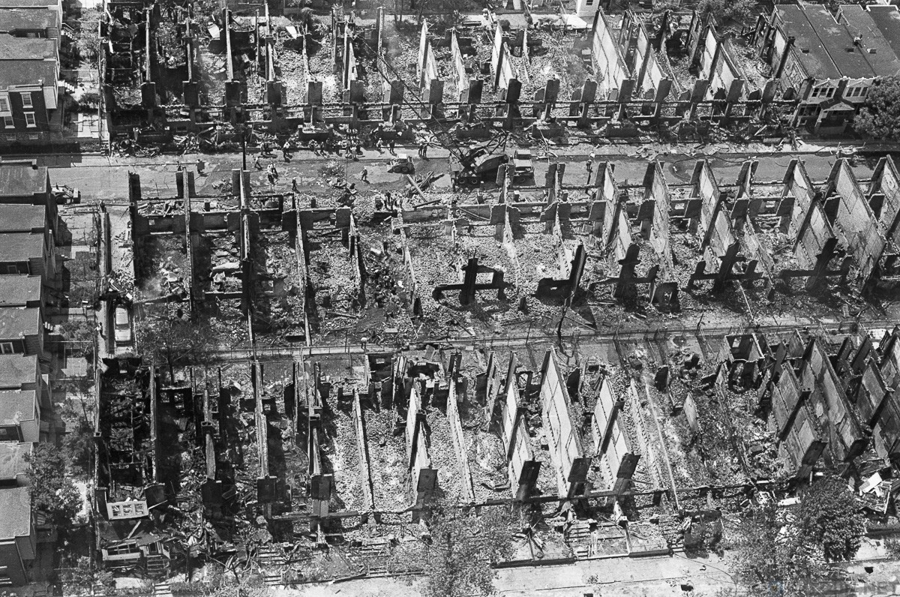
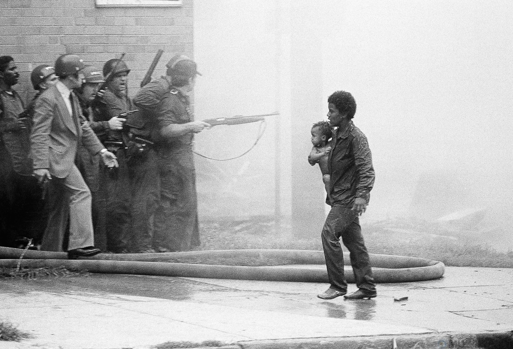
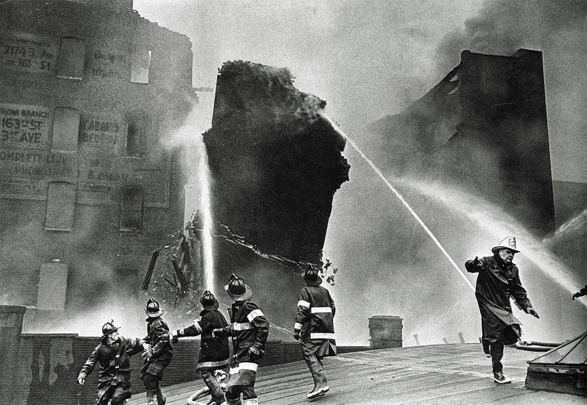

Horoscope
Aries
Many Aries will face the fact that the situation has started to get out of their control, and in the professional field they have a complete mess. However, thanks to the Sun, they will be ready to face any problems and enter into competition for a promising project or another promotion
Taurus
Taurus in September 1985 can perceive life as a big exciting game. To some extent, this will be the case, in any case, now you can really be lucky, for example, in gambling or in exchange operations. Still, you should not relax too much and forget about your immediate work responsibilities, otherwise you can easily fall out of favor with your superiors.
Twins
Gemini this month needs to worry less about work, it is better to pay attention to what is happening at home and in the family. Your loved ones will probably need your help right now. Or there will be some important events in this area that require your direct participation. Or maybe you will seek shelter from all external troubles in your home and family.
Crayfish
Cancer in September 1985 will meet with the machinations of those who envy him, he needs not to run with complaints to the leadership, but to show determination and firmly indicate to detractors their real place. Remember that your strong trump card is your good knowledge, experience and professional skills.
Lion
Lions need to be actively involved in the work after the summer vacation and demonstrate to the management everything that you are capable of. Assertiveness, hard work and the ability to finish what you started will help you this month to improve your financial situation. It is quite possible that at the end of September you will receive an additional bonus from your superiors. It may also be that you will be offered a vacant position with a higher salary.
Virgo
Virgo in September 1985 will have to work hard to achieve the desired result. At the same time, she will carefully follow all instructions and regulations, emphasizing each letter in them. All this will allow it to strengthen the positive potential that the Sun carries when passing through this field of the horoscope.
Libra
Libra in September 1985 may start to be interested in psychology or some mysterious phenomena in our lives. Some of the representatives of the sign can be baptized and become a parishioner of the nearest Church,and someone will join one of the spiritual communities, hoping to get answers to their questions.
Scorpio
Scorpio in September 1985 will strive to be in the company, share your thoughts with someone, and communicate. Even those representatives of the sign who usually showed a tendency to melancholy and loneliness. Make the most of the benefits that you get from communicating with old or new friends.
Sagittarius
Sagittarius in September 1985 should not be lazy or suffer from self-pity for a loved one. And then everything will be decent for him. If you are not too interested in career success, then you will have a normal quiet month, without any special events or changes.
Investigations into the high-profile case continue
On the morning of may 13, 1985, the police arrived at the house. They showed arrest warrants for the four residents of the house and ordered them to leave peacefully. In response, the shooting started. In response, the police called for the help of 500 more police officers who opened heavy fire on the house. Tear gas bombs were thrown into the house. But the residents of the house did not give up and shot at everything they saw. Despite requests from the mayor and Senator to de-escalate the conflict, police Commissioner Gregor Sambor gave the order to blow up the house.
The mayor demanded to change his mind and even threatened to resign, but the Commissioner stood his ground. At 17: 28, a bomb consisting of C4 and a timer with a delay of 45 seconds was dropped from a police helicopter, directly on the roof of the house. There was an explosion and a fire started. Firefighters were afraid to approach the fire because of the targeted shooting. The fire spread to neighboring houses. As time passed, the fire spread to the entire block. By the time the fire was extinguished four hours later, the fire had consumed 61 homes. In addition to the woman and the 13-year-old who managed to escape, all the others died in the fire.

A total of 11 people were killed. This includes movement leader John Africa, five adult members of the group, and five children aged 7 to 13. Despite an investigation and an official apology, no one was charged.
Fires
In the Western half of the United States, wildfires are raging in the States of Oregon, California, Washington and Colorado due to heat, prolonged drought and strong winds. The fire threatens localities, and tens of thousands of residents have been evacuated. In addition, the environmental situation has seriously deteriorated. On September 8, the most difficult situation was in Oregon. Because of the strong wind, gusts of which reached 120 km / h, there were many fires. The area of the two largest fires is 81 thousand hectares. Emergency evacuations were required in Marion, Douglas, Clackamas and lane counties. Also, 1,450 prisoners from three prisons were transported to safe places, according to Stormnews, citing Oregon Public Broadcasting (OPB). At least 100 structures were destroyed by fire in lane County. And in Marion County, where the sudden evacuation affected residents of the cities of mill city, Staton, Scots mills and Sablimity, there was a frightening phenomenon-because of the smoke of fires after the night remained dusk, settlements were shrouded in red haze, and the sun did not appear by noon.
In the state of California, the total area of wildfires this year increased to 881.4 thousand hectares. The previous anti-record was set in 2018 - about 793.2 thousand hectares. The fire service has been making such calculations since 1987, TASS reports. The number of fire centers, including liquidated ones, is 7563. The fire destroyed and damaged 3,866 homes and buildings. The number of victims of the disaster has increased from seven to eight people, the fire service confirmed. On September 8, the most difficult situation developed in the districts of Plumas, Bute and Skirt. Residents of several localities were urgently evacuated here, CBS SF reports.
Performance of the famous Russian ballerina! Anna Pavlova, Swan lake Friday, Big house, 22.00.Tickets are limited!
Tickets can be purchased at any time on a first come first served basis at 15A Komar street
The new York newspaper has been published for more than 70 years specifically for you,but unfortunately this is just a text written by a novice programmer, I hope in the future great AG.
All names and matches are semi-real and taken from open sources.